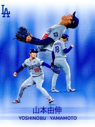

Yoshinobu Yamamoto is a Japanese right-handed pitcher for the Los Angeles Dodgers who signed a 12-year, $325 million contract in 2023, then the largest for a pitcher. Before MLB, he dominated NPB with Orix (3x MVP, 3x Sawamura Award) and won gold at the 2020 Olympics and 2023 WBC. He won World Series titles with the Dodgers in 2024 and 2025, winning MVP in 2025.
